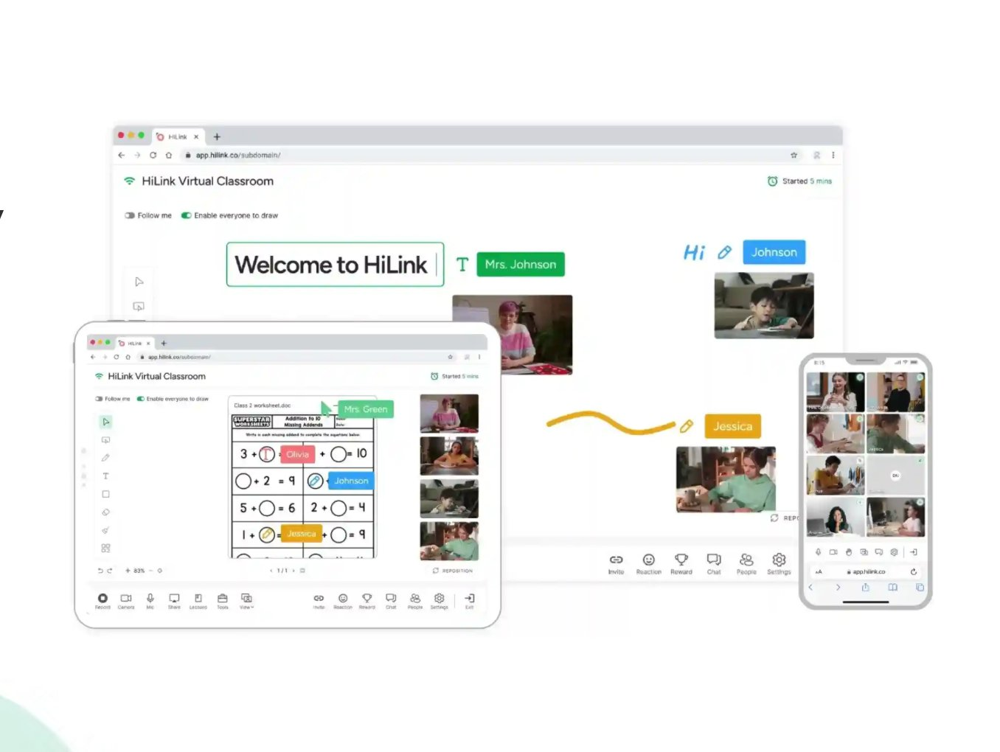
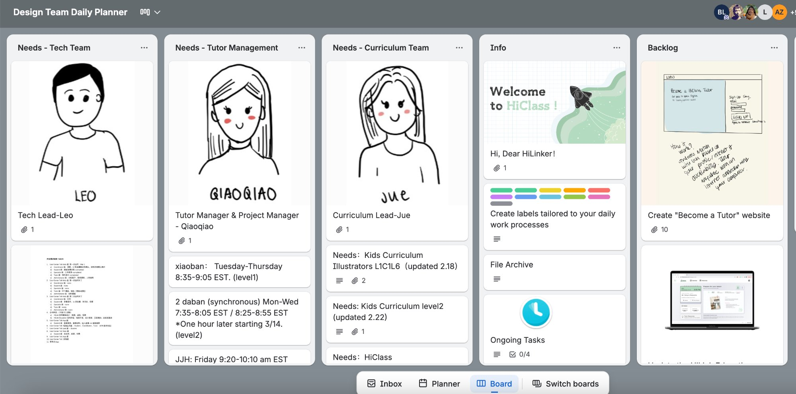
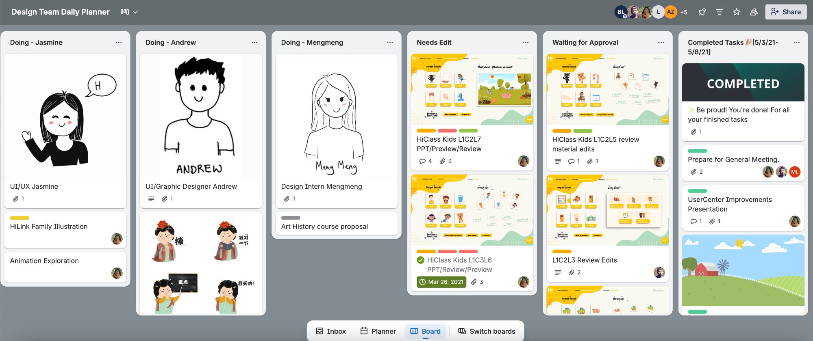
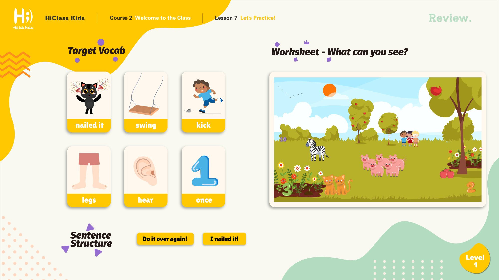
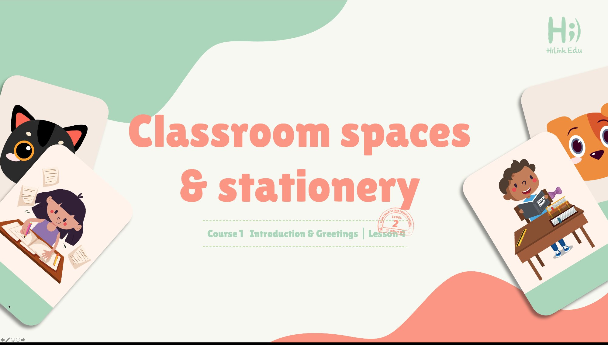
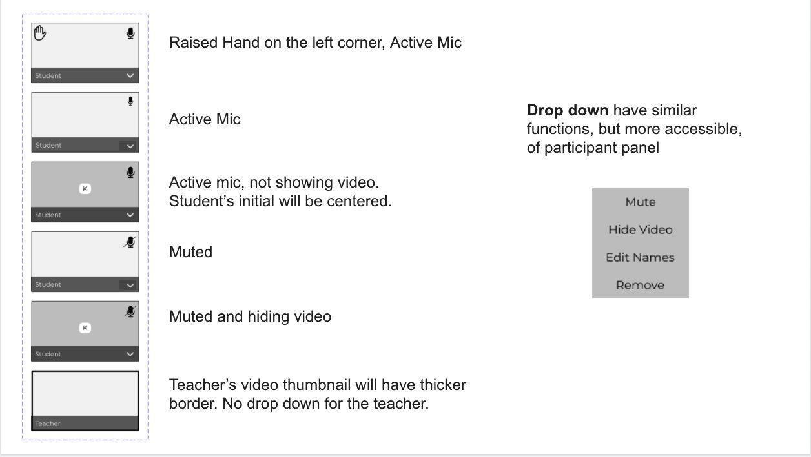
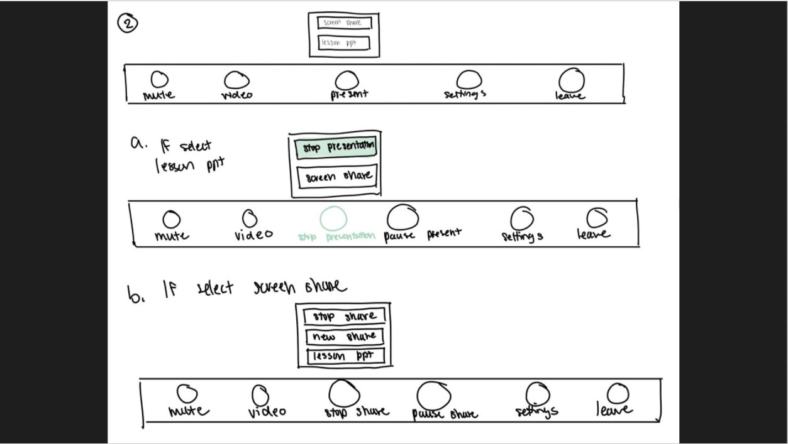
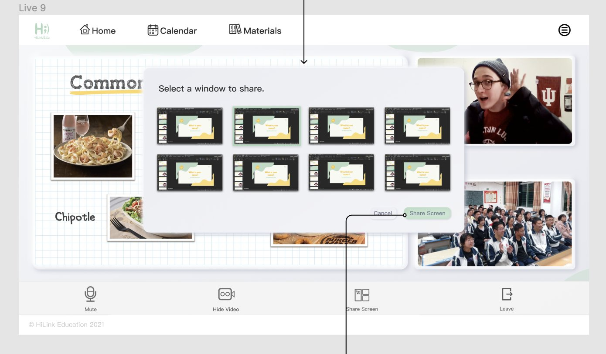
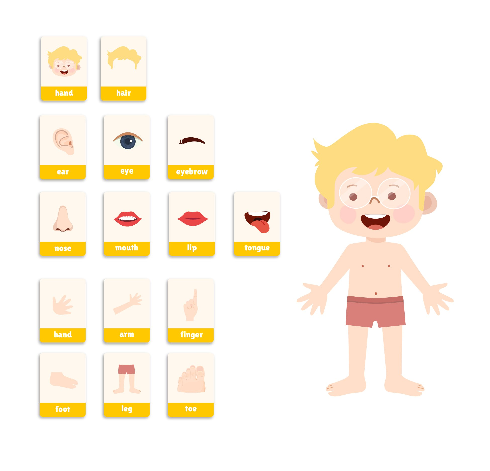

Product / Training Operations · HiLink Education
HiLink: LMS Product Direction + Curriculum Operations at Startup Scale
Co-led product direction and curriculum production for a fast-moving EdTech startup — coordinating two teams, a two-level curriculum, and a production pipeline that kept quality high while moving fast.
Context
Building a product and a curriculum at the same time
HiLink Education was building HiLink Virtual Classroom — a live, interactive online platform for young ESL/EFL learners, with features including shared whiteboard, collaborative activities, student video management, and lesson delivery. The product was early-stage: the platform was still being built while curriculum content needed to be produced in parallel.
I worked across both the product development and content production sides simultaneously as Product Manager and Curriculum Coordinator.

HiLink Virtual Classroom: real-time video, interactive whiteboard with student annotations, and collaborative worksheet activities for young ESL/EFL learners.
Problem
Two teams, no shared system, fast timelines
The startup faced a coordination problem common to early-stage companies: product and curriculum were both moving fast, but without a shared system for tracking work, prioritizing tasks, or managing handoffs. Work was getting duplicated. Deadlines were missed. It wasn't clear who was waiting on whom.
At the same time, curriculum production quality needed to meet a high visual bar — HiClass Kids lessons required professional illustration, sound design, and pedagogical structure — all at a volume and pace that demanded a tight production pipeline.
Team
Two teams, one coordination system
Design Team
- Jasmine — UI/UX Designer
- Andrew — UI/Graphic Designer
- Mengmeng — Design Intern
Curriculum Team
- Leo — Tech Lead
- Qiaoqiao — Tutor & Project Manager
- Jue — Curriculum Lead
- + additional contributors

Design Team Daily Planner in Trello: each team member had a role card with responsibilities. Cross-team dependencies were tracked in shared columns.
What I Built
A production system and a product — simultaneously
Built the production tracking system in Trello
Created a shared Trello workspace that unified both teams. Boards tracked tasks by team member (Doing columns per person), by stage (Needs Edit → Waiting for Approval → Completed), and by content unit. This gave everyone visibility into what was in progress, blocked, and done — across 8+ people working asynchronously.
Co-directed LMS product features
Worked with the tech and design team on LMS feature direction. Contributed to UI specifications — documenting exactly how student video thumbnails should behave (raised hand + active mic, muted states, teacher vs. student display differences) — and contributed to wireframes for key teacher-facing interactions like the screen sharing flow.
Coordinated HiClass Kids curriculum production
Oversaw production of HiClass Kids content across Level 1 and Level 2 — each spanning multiple courses and lessons with illustrated vocabulary slides, interactive worksheets, sentence structure activities, and review materials. Managed the review-edit-approval cycle to maintain quality at volume.
Built planning artifacts to align business and delivery
Created the operational documents that kept curriculum delivery aligned with product milestones — content scope maps, level/course structures, and scheduling artifacts. These made it possible to answer "what ships this week and what comes after" at any point in the cycle.

Curriculum workflow: tasks move from assignment → Needs Edit → Waiting for Approval → Completed. The Completed column tracked 300+ items over the engagement.






Impact
300+ materials shipped without compromising quality
The production system held through an intensive delivery period in which 300+ learning materials were shipped. The Trello workflow made handoffs between teams traceable and reduced the "who's waiting on what" confusion that had previously slowed delivery.
UI specifications and wireframes I contributed to gave the design and dev teams clear documentation for implementing teacher-facing features — reducing back-and-forth during a period when speed was critical to the company's survival.
The curriculum output — HiClass Kids Levels 1 and 2 — was of sufficient quality to anchor the platform's live classroom experience for its target users.